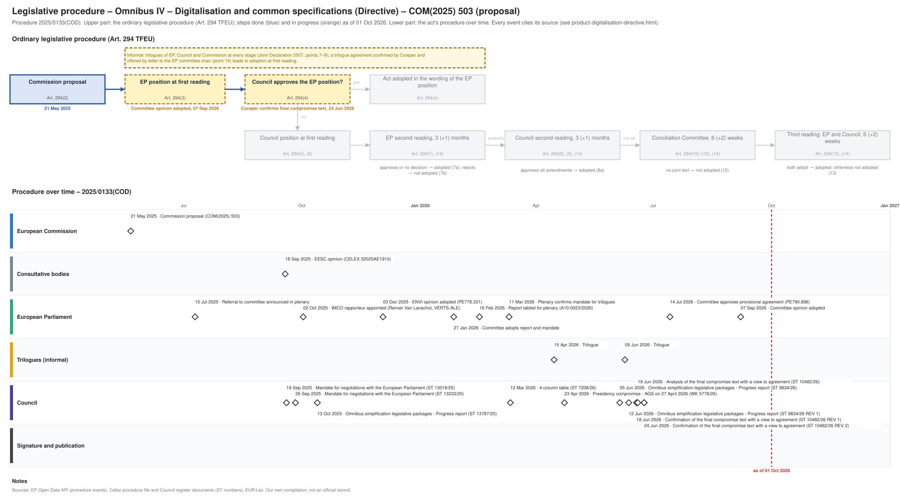

← All procedures · Regulation timeline
Procedure 2025/0133(COD), ongoing, as of 26 Sep 2026. Drawing: SVG · PNG · PDF (A3) · draw.io · Page as Markdown: product-digitalisation-directive.md
| Stage | Provisional agreement (last trilogue 09 Jun 2026) |
|---|---|
| Parliament | mandate 11 Mar 2026 |
| Council | mandate (ST 13018/25 of 19 Sep 2025) |
| Latest activity | 07 Sep 2026 · European Parliament: Committee opinion adopted |
| Next steps | 23 Nov 2026: Indicative plenary sitting date, 1st reading (EP forecast); EP plenary vote on the agreed text (Art. 294(3) TFEU), then Council adoption (Art. 294(4) TFEU), with legal-linguistic revision before or after the vote |

| Date | Actor | Event | Document | Source |
|---|---|---|---|---|
| 2025-05-21 | European Commission | Commission proposal (Art. 294(2) TFEU) | COM(2025) 503 · en.md de.md | Cellar (CELEX 52025PC0503) |
| 2025-07-10 | European Parliament | Referral to committee announced in plenary | EP procedure file | EP Open Data API, procedure 2025-0133 (REFERRAL) |
| 2025-09-18 | Consultative bodies | EESC opinion | CELEX 52025AE1910 | Cellar procedure file 2025/133 |
| 2025-09-19 | Council | Mandate for negotiations with the European Parliament | ST 13018/25 · en.md | Cellar procedure file 2025/133 (Council register) |
| 2025-10-02 | European Parliament | IMCO rapporteur appointed (Reinier Van Lanschot, VERTS-ALE) | EP procedure file | EP Open Data API, procedure 2025-0133 (participation RAPPORTEUR) |
| 2025-10-13 | Council | Omnibus simplification legislative packages - Progress report | ST 13787/25 · en.md de.md | Cellar procedure file 2025/133 (Council register) |
| 2025-12-03 | European Parliament | ENVI opinion adopted | PE778.331 | EP Open Data API, procedure 2025-0133 (COMMITTEE_ADOPTING_OPINION) |
| 2026-01-27 | European Parliament | Committee adopts report and mandate | EP procedure file | EP Open Data API, procedure 2025-0133 (COMMITTEE_ADOPTING_REPORT) |
| 2026-02-16 | European Parliament | Report tabled for plenary | A10-0023/2026 · en.md de.md | EP Open Data API, procedure 2025-0133 (TABLING_PLENARY) |
| 2026-03-11 | European Parliament | Plenary confirms mandate for trilogues | EP procedure file | EP Open Data API, procedure 2025-0133 (PLENARY_ENDORSE_COMMITTEE_INTERINSTITUTIONAL_NEGOTIATIONS) |
| 2026-03-12 | Council | 4-column table | ST 7208/26 · en.md | Cellar procedure file 2025/133 (Council register) |
| 2026-04-15 | Trilogues (informal) | Trilogue | EP procedure file | EP Open Data API, procedure 2025-0133 (INTERINSTITUTIONAL_NEGOTIATION) |
| 2026-04-23 | Council | Presidency compromise - AGS on 27 April 2026 | WK 5778/26 · en.md | Cellar procedure file 2025/133 (Council register) |
| 2026-06-05 | Council | Omnibus simplification legislative packages - Progress report | ST 9834/26 · en.md | Cellar procedure file 2025/133 (Council register) |
| 2026-06-09 | Trilogues (informal) | Trilogue | EP procedure file | EP Open Data API, procedure 2025-0133 (INTERINSTITUTIONAL_NEGOTIATION) |
| 2026-06-12 | Council | Omnibus simplification legislative packages - Progress report | ST 9834/26 REV 1 · en.md de.md | Cellar procedure file 2025/133 (Council register) |
| 2026-06-24 | Council | Final compromise text | ST 10482/26 ADD 2 REV 1 · en.md | Cellar procedure file 2025/133 (Council register) |
| 2026-06-24 | Council | Confirmation of the final compromise text with a view to agreement | ST 10482/26 REV 2 · en.md | Cellar procedure file 2025/133 (Council register) |
| 2026-07-14 | European Parliament | Committee approves provisional agreement | PE790.896 · en.md | EP Open Data API, procedure 2025-0133 (COMMITTEE_APPROVE_PROVISIONAL_AGREEMENT) |
| 2026-09-07 | European Parliament | Committee opinion adopted | EP procedure file | EP Open Data API, procedure 2025-0133 (COMMITTEE_ADOPTING_OPINION) |
| Date | Document | Kind | Subject | Text |
|---|---|---|---|---|
| 2025-05-26 | ST 9327/25 | council-transmission | Proposal for a DIRECTIVE OF THE EUROPEAN PARLIAMENT AND OF THE COUNCIL amending Directives 2000/14/EC, 2011/65/EU, 2013/53/EU, 2014/29/EU, 2014/30/EU, … | – |
| 2025-05-26 | ST 9327/25 ADD 1 | council-transmission | ANNEXES to the Proposal for a DIRECTIVE OF THE EUROPEAN PARLIAMENT AND OF THE COUNCIL amending Directives 2000/14/EC, 2011/65/EU, 2013/53/EU, 2014/29/EU, … | – |
| 2025-05-26 | ST 9327/25 ADD 2 | council-transmission | COMMISSION STAFF WORKING DOCUMENT Accompanying the documents Proposal for a Directive of the European Parliament and of the Council amending Directives … | – |
| 2025-06-16 | WK 7985/25 | council-note | Digitalisation and Common Specifications - Commission presentation | – |
| 2025-06-16 | WK 8008/25 | council-note | Compilation of written comments | – |
| 2025-06-17 | WK 8008/25 ADD 1 | council-note | Compilation of written comments | – |
| 2025-06-20 | WK 7985/25 REV 1 | council-note | Digitalisation and Common Specifications - Commission presentation | – |
| 2025-07-02 | WK 9207/25 | council-note | Work programme and priorities of the Danish Presidency - Presentation | – |
| 2025-07-09 | WK 9571/25 | council-note | Digitalisation and common specifications – Presidency discussion note | – |
| 2025-07-14 | ST 11580/25 | council-note | AOB for the meeting of the General Affairs Council on 18 July - Handling of the simplification agenda during the Danish Presidency - Explanatory note | – |
| 2025-08-27 | WK 10585/25 | council-note | Explanatory note for AGS of 1 September | – |
| 2025-09-05 | WK 10998/25 | council-note | Digitalisation and common specifications - Explanatory note for the AGS on 11 September | – |
| 2025-09-09 | WK 11239/25 | council-note | Digitalisation & common specifications + SMC - MS compiled comments | – |
| 2025-09-18 | CELEX 52025AE1910 | opinion | Opinion of the European Economic and Social Committee a) Proposal for a Regulation of the European Parliament and of the Council amending Regulations (EU) … | – |
| 2025-09-19 | ST 13018/25 | council-position | Mandate for negotiations with the European Parliament | en |
| 2025-10-13 | ST 13787/25 | council-progress-report | Omnibus simplification legislative packages - Progress report | en de |
| 2025-12-04 | ST 16131/25 REV 1 | council-note | Simplification a) 2025 Annual Overview Report b) Annual Progress Reports - Presentation by the Commission - Exchange of views | – |
| 2025-12-16 | PE778.331 | ep-opinion | OPINION on the proposal for a directive of the European Parliament and of the Council amending Directives 2000/14/EC, 2011/65/EU, 2013/53/EU, 2014/29/EU, … | – |
| 2026-01-09 | WK 252/26 | council-note | Priorities and work programme of the Cyprus Presidency - Presentation by the Presidency (AGS on 9 January 2026) | – |
| 2026-02-16 | A10-0023/2026 | ep-report | REPORT on the proposal for a directive of the European Parliament and of the Council amending Directives 2000/14/EC, 2011/65/EU, 2013/53/EU, 2014/29/EU, … | en de |
| 2026-03-12 | ST 7208/26 | trilogue | 4-column table | en |
| 2026-03-27 | WK 4718/26 | council-note | Digitalisation and common specifications | – |
| 2026-04-23 | WK 5778/26 | council-compromise | Presidency compromise - AGS on 27 April 2026 | en |
| 2026-06-05 | ST 9834/26 | council-progress-report | Omnibus simplification legislative packages - Progress report | en |
| 2026-06-12 | ST 9834/26 REV 1 | council-progress-report | Omnibus simplification legislative packages - Progress report | en de |
| 2026-06-24 | ST 10482/26 ADD 2 REV 1 | agreed-text | Final compromise text | en |
| 2026-06-24 | ST 10482/26 REV 2 | council-confirmation | Confirmation of the final compromise text with a view to agreement | en |
| 2026-06-26 | PE790.896 | agreed-text | PROVISIONAL AGREEMENT RESULTING FROM INTERINSTITUTIONAL NEGOTIATIONS Proposal for a directive of the European Parliament and of the Council amending Directives … | en |
Unofficial Markdown conversions for reading, searching and project folders; only the official document is authentic. "Read" opens the rendered text on GitHub, where a link to a provision (#art-13, #rec-12, #annex-i) jumps to it.
| Date | Stage | Document | Markdown | Read |
|---|---|---|---|---|
| 2025-05-21 | com-proposal | CELEX 52025PC0503 | en de | GitHub |
| 2025-09-19 | council-position | ST 13018/25 | en | GitHub |
| 2025-10-13 | council-progress-report | ST 13787/25 | en de | GitHub |
| 2026-02-16 | ep-report | A10-0023/2026 | en de | GitHub |
| 2026-03-12 | trilogue | ST 7208/26 | en | GitHub |
| 2026-04-23 | council-compromise | WK 5778/26 | en | GitHub |
| 2026-06-05 | council-progress-report | ST 9834/26 | en | GitHub |
| 2026-06-12 | council-progress-report | ST 9834/26 REV 1 | en de | GitHub |
| 2026-06-24 | agreed-text | ST 10482/26 ADD 2 REV 1 | en | GitHub |
| 2026-06-24 | council-confirmation | ST 10482/26 REV 2 | en | GitHub |
| 2026-06-26 | agreed-text | PE790.896 | en | GitHub |